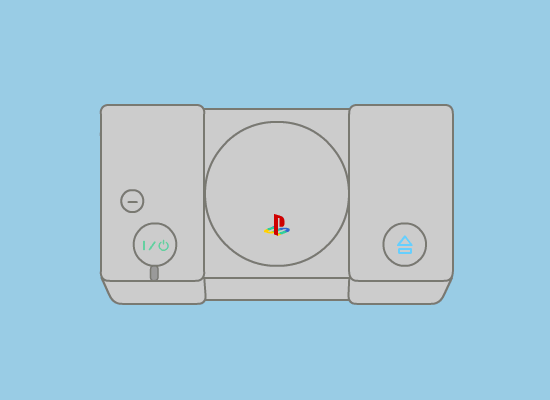
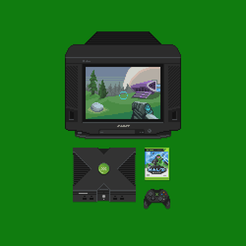
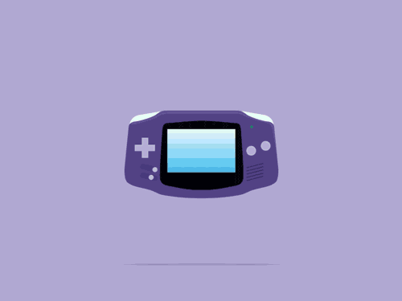
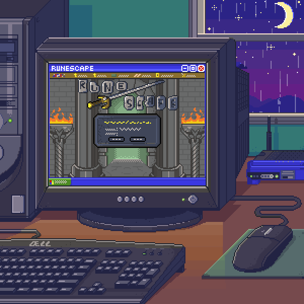

CONSOLAS
En esta sección encontrarás información sobre las consolas de videojuegos actuales y aquellas que han marcado tu infancia. Explora nuestras reseñas y análisis en su basto mundo.

Play Station 1La PlayStation original, lanzada en 1994, introdujo el formato de discos CD-ROM para los juegos, revolucionando la industria y definiendo la era moderna de los videojuegos. Play Station 2La PlayStation 2, lanzada en 2000, es la consola doméstica más vendida de la historia, con una amplia biblioteca de juegos que abarca varios géneros y franquicias icónicas. Play Station 3La PlayStation 3, lanzada en 2006, fue una de las primeras consolas en ofrecer gráficos de alta definición y funcionalidades multimedia avanzadas, como la reproducción de Blu-ray. Play Station 4La PlayStation 4, lanzada en 2013, es una de las consolas más populares y exitosas de la generación, con una impresionante biblioteca de juegos exclusivos y funciones multimedia. Play Station 5La PlayStation 5, lanzada en 2020, representa la próxima generación de consolas de Sony, con capacidades de rendimiento mejoradas, tiempos de carga más rápidos y juegos impresionantes en 4K. |

XboxLa primera incursión de Microsoft en el mercado de las consolas de videojuegos, lanzada en 2001. Introdujo características como Xbox Live, un servicio en línea que revolucionó el juego en red, y presentó una sólida selección de juegos exclusivos. Xbox 360Lanzada en 2005, la Xbox 360 marcó un gran avance en términos de gráficos y capacidad multimedia. Fue la primera consola en ofrecer juegos en alta definición y se destacó por su catálogo diverso y su sólida comunidad en línea. Xbox OneLanzada en 2013, la Xbox One se centró en la integración de entretenimiento en el hogar, ofreciendo capacidades multimedia avanzadas junto con una potente experiencia de juego. Presentó funciones como la compatibilidad con televisión en vivo y la capacidad de cambiar rápidamente entre aplicaciones y juegos. Xbox Series XLanzada en 2020, la Xbox Series X es la última generación de consolas de Microsoft. Ofrece gráficos de alta fidelidad hasta 4K, tiempos de carga rápidos gracias a su unidad de estado sólido (SSD) y una amplia gama de juegos optimizados para sacar el máximo partido de su hardware de vanguardia. Xbox Series STambién lanzada en 2020, la Xbox Series S es una versión más asequible de la Serie X. Aunque ofrece menos potencia que su contraparte, sigue siendo capaz de ofrecer una experiencia de juego de alta calidad y es ideal para aquellos que buscan ingresar al ecosistema de Xbox a un precio más accesible. |

Nintendo Entertainment System (NES)Lanzada en 1985. Conocida como la consola que revitalizó la industria de los videojuegos en América del Norte después de la crisis de 1983, el NES introdujo a muchos jugadores a franquicias icónicas como Super Mario Bros., The Legend of Zelda y Metroid. Super Nintendo Entertainment System (SNES)Lanzada en 1990. Con gráficos mejorados y un impresionante catálogo de juegos, el SNES estableció a Nintendo como uno de los líderes en la industria de los videojuegos. Introdujo clásicos como Super Mario World, The Legend of Zelda: A Link to the Past y Super Metroid. Nintendo 64Lanzada en 1996. La primera consola de Nintendo en presentar gráficos 3D, el Nintendo 64 trajo consigo juegos innovadores como Super Mario 64, The Legend of Zelda: Ocarina of Time y GoldenEye 007, que siguen siendo reverenciados por los jugadores hasta el día de hoy. Nintendo SwitchLanzada en 2017. Innovadora en su diseño, la Nintendo Switch combina la portabilidad de una consola de mano con la capacidad de jugar en el televisor. Con títulos como The Legend of Zelda: Breath of the Wild, Super Mario Odyssey y Animal Crossing: New Horizons, la Switch ha demostrado ser un éxito tanto para jugadores casuales como para hardcore. |

Pc GamingLas PCs Gaming son computadoras diseñadas para ofrecer un rendimiento superior en juegos. Equipadas con hardware de alta gama, como tarjetas gráficas potentes y procesadores avanzados, proporcionan una experiencia de juego fluida y de alta calidad. Son altamente personalizables y permiten acceder a una amplia variedad de juegos, ofreciendo una experiencia versátil y envolvente para los jugadores. |